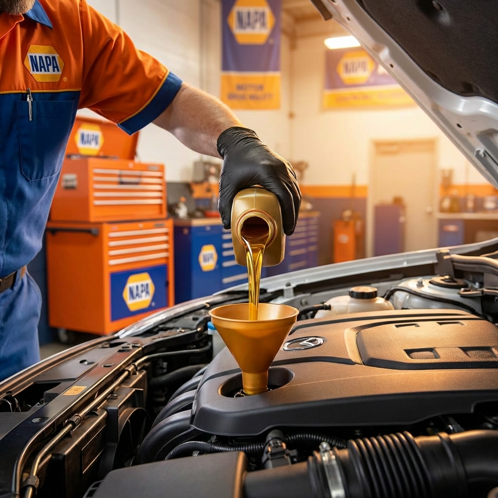
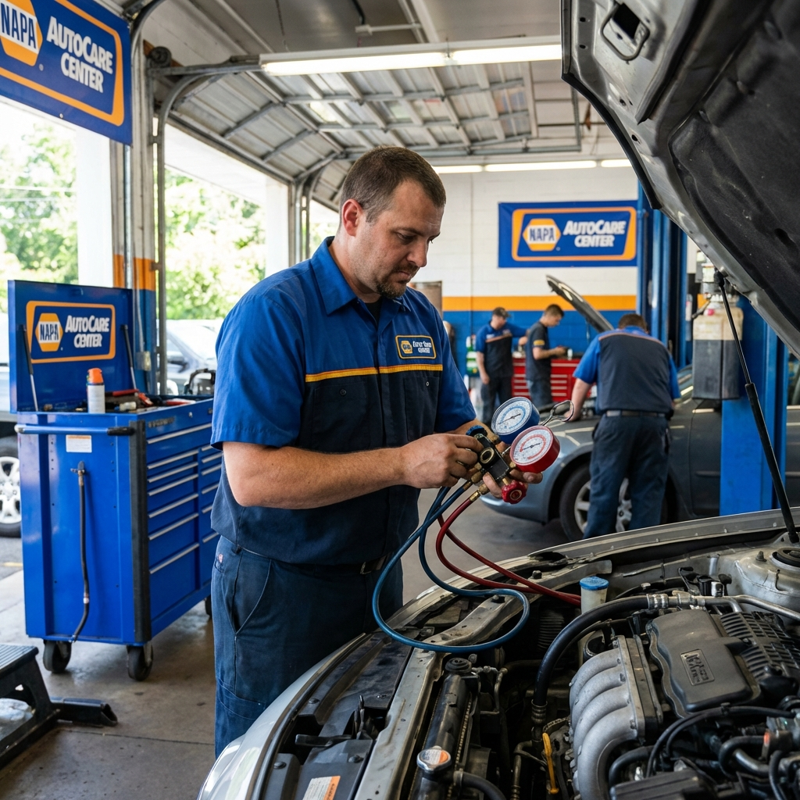
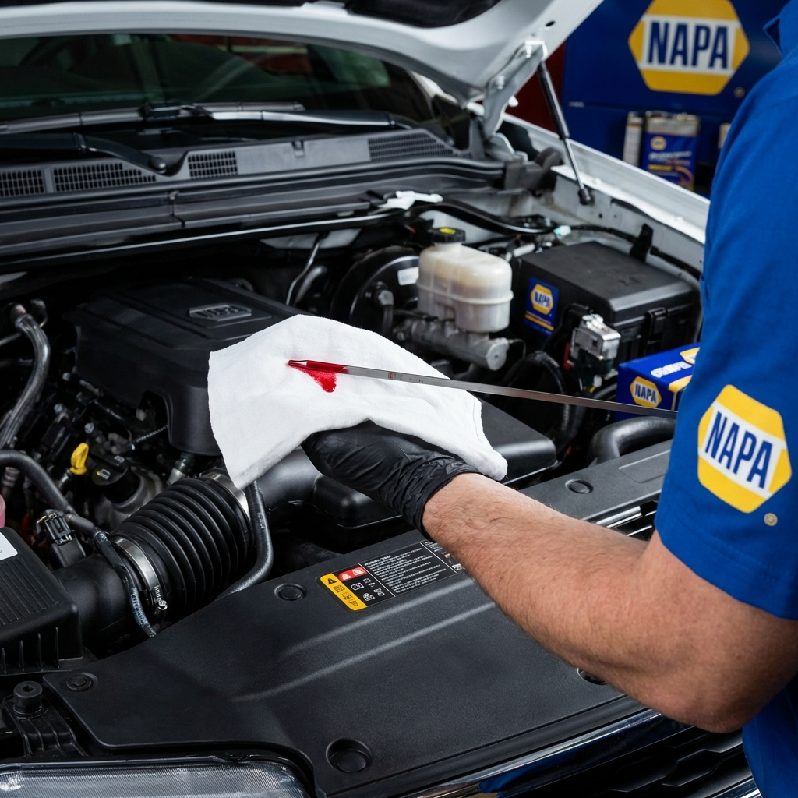
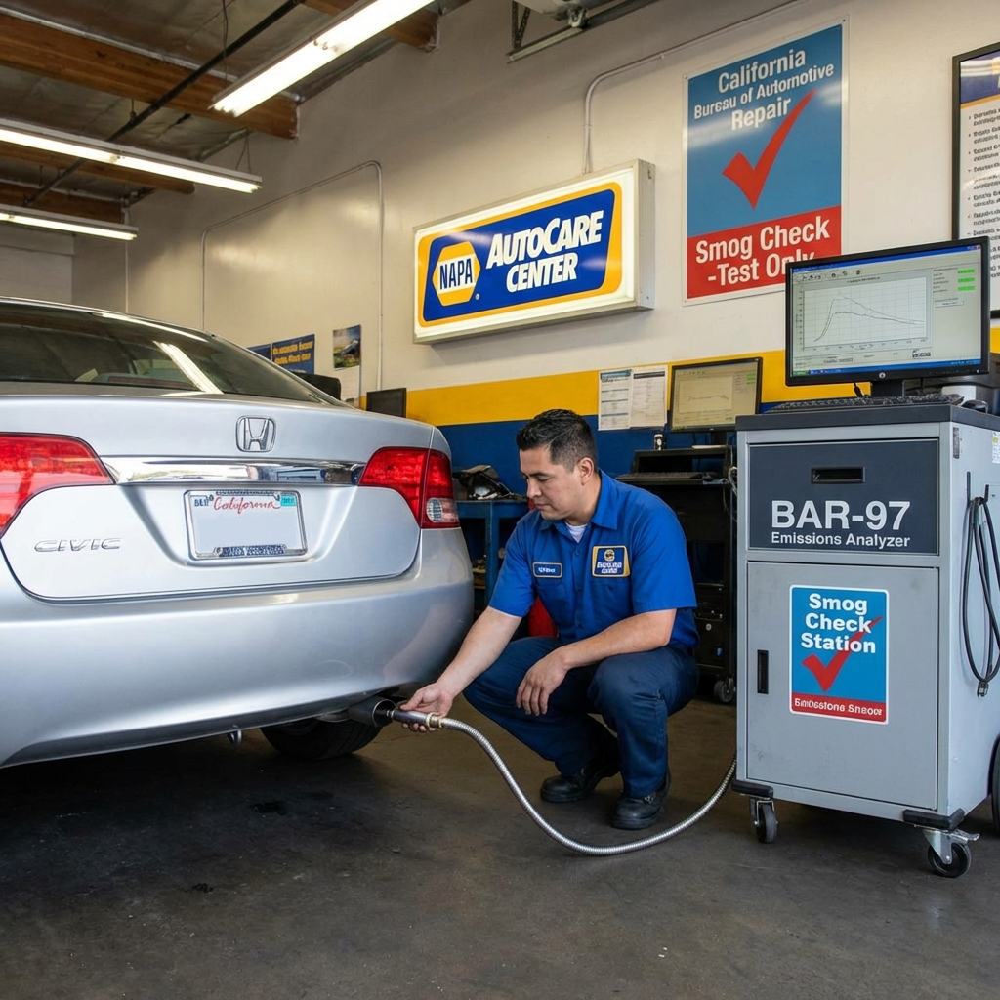

All Our Services
Todos Nuestros Servicios
Complete automotive repair and maintenance solutions
Soluciones completas de reparación y mantenimiento automotriz

Oil Change Services
Servicios de Cambio de Aceite
From $79.99 | Conventional, Blend, Full Synthetic
Includes FREE
27-point inspection
Desde $79.99 | Convencional, Mezcla, Sintético Completo
Incluye
inspección GRATIS de 27 puntos
What's Included:
Qué Incluye:
- Premium quality motor oil (your choice of type)
- New oil filter installation
- Fluid level check and top-off (coolant, brake, power steering, washer)
- 27-point comprehensive vehicle inspection
- Tire pressure check and adjustment
- Battery test and terminal cleaning
- Aceite de motor de calidad premium (a su elección)
- Instalación de filtro de aceite nuevo
- Revisión y llenado de fluidos (refrigerante, freno, dirección, limpiaparabrisas)
- Inspección integral de 27 puntos
- Revisión y ajuste de presión de neumáticos
- Prueba de batería y limpieza de terminales
How It Works:
Cómo Funciona:
Our certified technicians drain your old oil, replace the filter, and fill your engine with fresh, high-quality oil suited to your vehicle's specifications. We then perform a comprehensive 27-point inspection to identify any potential issues before they become costly repairs.
Nuestros técnicos certificados drenan el aceite usado, reemplazan el filtro y llenan su motor con aceite fresco de alta calidad adecuado para las especificaciones de su vehículo. Luego realizamos una inspección integral de 27 puntos para identificar cualquier problema potencial antes de que se convierta en reparaciones costosas.
Benefits:
Beneficios:
- Extends engine life and performance
- Prevents costly engine damage
- Improves fuel efficiency
- Early detection of potential problems
- Prolonga la vida útil y el rendimiento del motor
- Previene daños costosos al motor
- Mejora la eficiencia de combustible
- Detección temprana de problemas potenciales
Brake Service
Servicio de Frenos
From $299 | Pads, Rotors, Calipers, ABS
Free brake inspection
included
Desde $299 | Pastillas, Discos, Calipers, ABS
Inspección gratis
incluida
What's Included:
Qué Incluye:
- Complete brake system inspection
- Brake pad replacement (premium NAPA pads)
- Rotor resurfacing or replacement
- Caliper inspection and lubrication
- Brake fluid level check
- Road test to verify proper operation
- Inspección completa del sistema de frenos
- Reemplazo de pastillas de frenos (pastillas NAPA premium)
- Rectificado o reemplazo de discos
- Inspección y lubricación de calipers
- Revisión del nivel de líquido de frenos
- Prueba de manejo para verificar operación correcta
How It Works:
Cómo Funciona:
We start with a thorough inspection of your entire brake system, including pads, rotors, calipers, and brake lines. Worn pads are replaced with high-quality NAPA parts, rotors are resurfaced or replaced as needed, and all components are properly lubricated. We finish with a road test to ensure your brakes respond smoothly and safely.
Comenzamos con una inspección exhaustiva de todo su sistema de frenos, incluyendo pastillas, discos, calipers y líneas de freno. Las pastillas desgastadas se reemplazan con repuestos NAPA de alta calidad, los discos se rectifican o reemplazan según sea necesario, y todos los componentes se lubrican adecuadamente. Finalizamos con una prueba de manejo para garantizar que sus frenos respondan de manera suave y segura.
Benefits:
Beneficios:
- Maximum stopping power and safety
- Reduced brake noise and vibration
- Extended brake component life
- Peace of mind for you and your family
- Máxima potencia de frenado y seguridad
- Reducción de ruido y vibración de frenos
- Vida útil prolongada de componentes de freno
- Tranquilidad para usted y su familia
Engine Diagnostics
Diagnóstico del Motor
$100 | Check Engine Light, OBD-II Scan
Computer diagnostics
included
$100 | Luz del Motor, Escaneo OBD-II
Diagnóstico computarizado
incluido
What's Included:
Qué Incluye:
- Professional OBD-II computer scan
- Trouble code retrieval and interpretation
- Visual engine inspection
- Sensor testing and verification
- Detailed diagnostic report
- Repair recommendations and cost estimate
- Escaneo computarizado OBD-II profesional
- Recuperación e interpretación de códigos de falla
- Inspección visual del motor
- Prueba y verificación de sensores
- Reporte de diagnóstico detallado
- Recomendaciones de reparación y estimado de costos
How It Works:
Cómo Funciona:
Using advanced diagnostic equipment, we connect to your vehicle's onboard computer to read and interpret error codes. Our experienced technicians analyze these codes in conjunction with a physical inspection to accurately pinpoint the root cause of your check engine light or performance issues. You'll receive a clear explanation of the problem and a transparent repair estimate.
Utilizando equipo de diagnóstico avanzado, nos conectamos a la computadora de su vehículo para leer e interpretar códigos de error. Nuestros técnicos experimentados analizan estos códigos junto con una inspección física para identificar con precisión la causa raíz de su luz de motor o problemas de rendimiento. Recibirá una explicación clara del problema y un estimado de reparación transparente.
Benefits:
Beneficios:
- Accurate problem identification
- Prevention of further damage
- Avoid unnecessary repairs
- Informed decision-making
- Identificación precisa del problema
- Prevención de daños adicionales
- Evitar reparaciones innecesarias
- Toma de decisiones informadas

Key Duplication & Programming
Duplicado y Programación de Llaves
$15-$400 | Traditional, Transponder, Tesla
Same-day service
available
$15-$400 | Tradicional, Transponder, Tesla
Servicio mismo día
disponible
What's Included:
Qué Incluye:
- Traditional key cutting ($15-$25)
- Transponder chip programming ($150-$250)
- Smart key/FOB programming ($200-$400)
- Tesla key card programming (specialty)
- Key battery replacement
- Remote testing and verification
- Corte de llaves tradicionales ($15-$25)
- Programación de chip transponder ($150-$250)
- Programación de llave inteligente/FOB ($200-$400)
- Programación de tarjeta Tesla (especialidad)
- Reemplazo de batería de llave
- Prueba y verificación de control remoto
How It Works:
Cómo Funciona:
Brook has specialized training and equipment for automotive key programming, including newer vehicles and Tesla models. We cut and/or program your new key to match your vehicle's security system. For transponder and smart keys, we connect to your vehicle's computer system to program the chip, ensuring secure and reliable operation. Most services are completed same-day.
Brook tiene capacitación y equipo especializado para programación de llaves automotrices, incluyendo vehículos más nuevos y modelos Tesla. Cortamos y/o programamos su llave nueva para que coincida con el sistema de seguridad de su vehículo. Para llaves transponder e inteligentes, nos conectamos al sistema informático de su vehículo para programar el chip, asegurando una operación segura y confiable. La mayoría de los servicios se completan el mismo día.
Benefits:
Beneficios:
- Save hundreds vs. dealership pricing
- Same-day service (no appointment wait)
- Expert service for all makes and models
- Specialty in Tesla and luxury vehicles
- Ahorre cientos vs. precios de concesionario
- Servicio el mismo día (sin espera de cita)
- Servicio experto para todas las marcas y modelos
- Especialidad en Tesla y vehículos de lujo

A/C Service & Repair
Servicio y Reparación A/C
From $150 | Recharge, Leak Detection
R-134a and R-1234yf
supported
Desde $150 | Recarga, Detección de Fugas
Compatible R-134a y
R-1234yf
What's Included:
Qué Incluye:
- A/C system inspection and pressure test
- Refrigerant recharge (R-134a or R-1234yf)
- Leak detection using UV dye
- Compressor and condenser inspection
- Belt and hose condition check
- Temperature performance verification
- Inspección del sistema A/C y prueba de presión
- Recarga de refrigerante (R-134a o R-1234yf)
- Detección de fugas usando tinte UV
- Inspección de compresor y condensador
- Revisión de estado de correas y mangueras
- Verificación de rendimiento de temperatura
How It Works:
Cómo Funciona:
We use specialized equipment to test your A/C system pressure and identify leaks. After diagnosing any issues, we evacuate the old refrigerant, check for leaks using UV dye, repair as needed, and recharge the system with the correct type and amount of refrigerant for your vehicle. Perfect for hot California summers!
Utilizamos equipo especializado para probar la presión de su sistema A/C e identificar fugas. Después de diagnosticar cualquier problema, evacuamos el refrigerante viejo, verificamos fugas usando tinte UV, reparamos según sea necesario, y recargamos el sistema con el tipo y cantidad correctos de refrigerante para su vehículo. ¡Perfecto para los veranos calurosos de California!
Benefits:
Beneficios:
- Restore ice-cold A/C performance
- Improve cabin comfort and air quality
- Environmental compliance (proper refrigerant handling)
- Prevent costly compressor damage
- Restaurar rendimiento helado del A/C
- Mejorar comodidad de cabina y calidad del aire
- Cumplimiento ambiental (manejo correcto de refrigerante)
- Prevenir daños costosos al compresor

Transmission Service
Servicio de Transmisión
From $180 | Fluid Change, Filter, Diagnostics
Automatic & manual
Desde $180 | Cambio de Fluido, Filtro, Diagnóstico
Automática y
manual
What's Included:
Qué Incluye:
- Transmission fluid drain and refill
- Filter replacement (where applicable)
- Pan gasket replacement
- Torque converter inspection
- Shift quality road test
- Leak inspection and repair
- Drenado y llenado de fluido de transmisión
- Reemplazo de filtro (cuando aplique)
- Reemplazo de empaque de bandeja
- Inspección del convertidor de par
- Prueba de manejo de calidad de cambios
- Inspección y reparación de fugas
How It Works:
Cómo Funciona:
We drain the old, contaminated transmission fluid, replace the filter and pan gasket, then refill with manufacturer-specified fluid. For automatic transmissions, we inspect the torque converter and solenoids. A road test ensures smooth shifting and proper operation. Regular transmission service prevents expensive transmission rebuilds or replacements.
Drenamos el fluido de transmisión viejo y contaminado, reemplazamos el filtro y el empaque de la bandeja, luego rellenamos con fluido especificado por el fabricante. Para transmisiones automáticas, inspeccionamos el convertidor de par y solenoides. Una prueba de manejo asegura cambios suaves y operación adecuada. El servicio regular de transmisión previene reconstrucciones o reemplazos costosos de transmisión.
Benefits:
Beneficios:
- Smooth, responsive shifting
- Extended transmission lifespan
- Prevent costly transmission failure
- Better fuel economy
- Cambios suaves y responsivos
- Vida útil extendida de la transmisión
- Prevenir falla costosa de transmisión
- Mejor economía de combustible

California Smog Check
Verificación de Emisiones California
$49 | STAR Certified Station
Fast service, results same day
$49 | Estación Certificada STAR
Servicio rápido, resultados mismo
día
What's Included:
Qué Incluye:
- Complete OBD-II emissions test
- Visual inspection of emissions systems
- Gas cap pressure test
- Electronic submission to DMV
- Printed certificate for your records
- Free retest if failed (with repairs done here)
- Prueba completa de emisiones OBD-II
- Inspección visual de sistemas de emisiones
- Prueba de presión de tapa de gasolina
- Envío electrónico al DMV
- Certificado impreso para sus registros
- Re-prueba gratis si falla (con reparaciones hechas aquí)
How It Works:
Cómo Funciona:
As a STAR certified station, we perform the required California emissions test using state-approved equipment. We connect to your vehicle's computer, test all emissions-related systems, and submit results directly to the DMV electronically. Most tests are completed in 30 minutes or less. If your vehicle fails, we can diagnose and repair the issue, then retest for free.
Como estación certificada STAR, realizamos la prueba de emisiones de California requerida usando equipo aprobado por el estado. Nos conectamos a la computadora de su vehículo, probamos todos los sistemas relacionados con emisiones, y enviamos los resultados directamente al DMV electrónicamente. La mayoría de las pruebas se completan en 30 minutos o menos. Si su vehículo falla, podemos diagnosticar y reparar el problema, luego re-probar gratis.
Benefits:
Beneficios:
- Required for DMV registration renewal
- STAR certified = trusted and accurate
- Same-day service and results
- Free retest with repairs
- Requerido para renovación de registro del DMV
- Certificado STAR = confiable y preciso
- Servicio y resultados el mismo día
- Re-prueba gratis con reparaciones
+ More Services
+ Más Servicios
- Suspension & Steering
- Suspensión y Dirección
- Electrical Systems
- Sistemas Eléctricos
- Cooling System
- Sistema de Enfriamiento
- Tune-Ups
- Puestas a Punto
- Fleet Services
- Servicios de Flotas